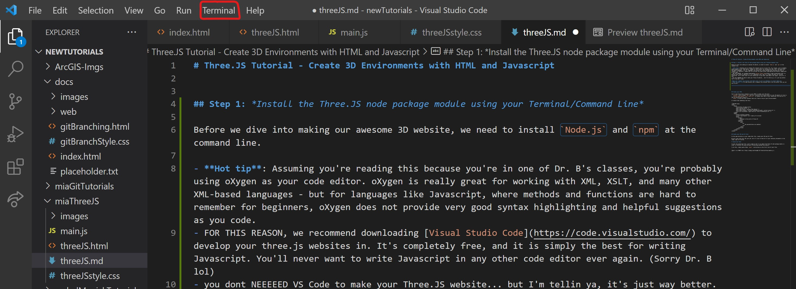
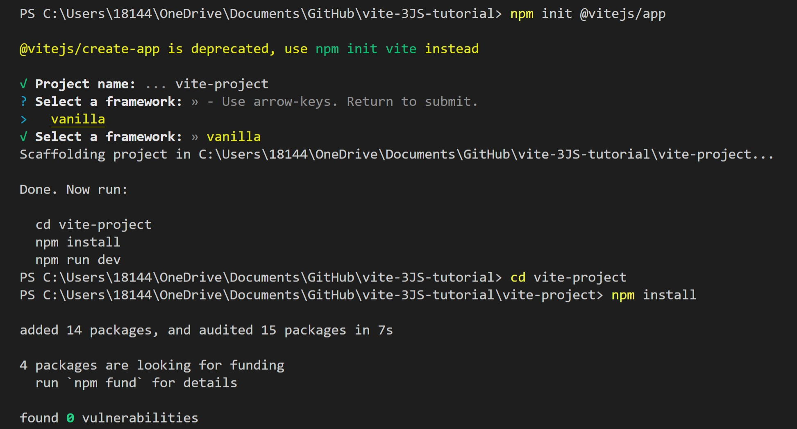
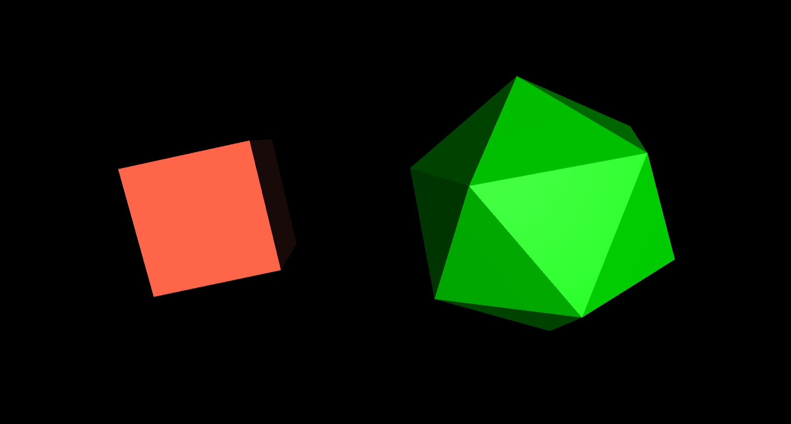
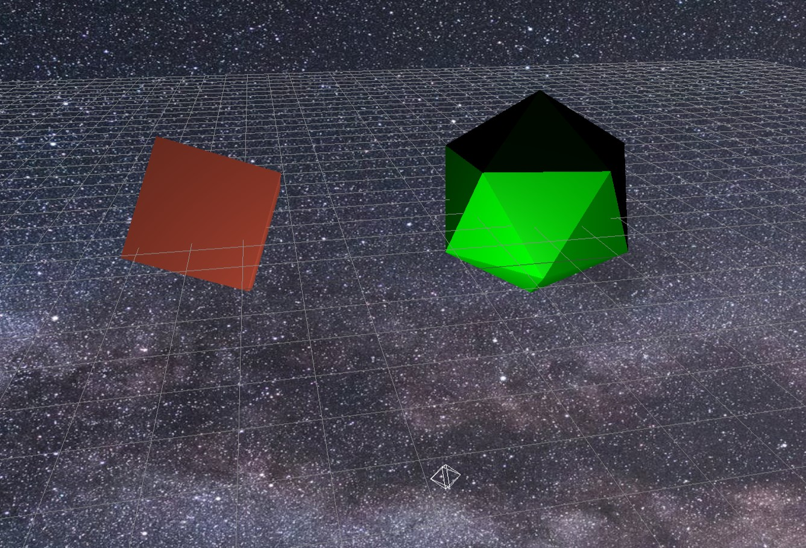
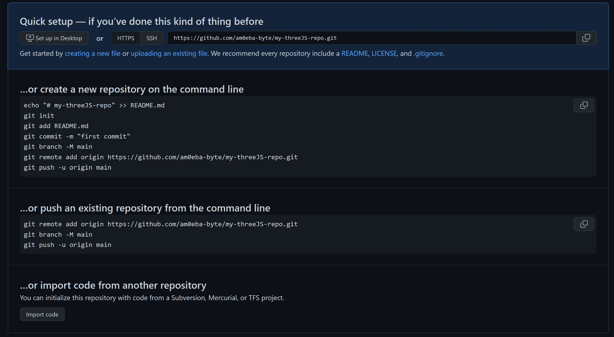

Before we dive into making our awesome 3D website, we need to install Node.js and
npm
at the command line.
We strongly recommend writing your code in JetBrains' WebStorm,
which we will explore as an alternative
to the oXygen XML Editor for working intensively on JavaScript projects.
Install Node.js
Node.JS is what makes the Javascript world go round.
"As an asynchronous event-driven JavaScript runtime, Node.js is designed to build scalable network
applications." -Node.JS devs
Before downloading Node.JS, you should check to see if you already have it installed in your machine.
To do this, we will open our Command Line.
Hot tip part 2: VS code actually has a command line terminal built into the editor that
you
can use as well:

Enter this command to check if you already have Node.JS Installed:
node -v
If you already have Node.JS installed, the terminal will print a version number that looks something like
this:
v0.10.35
If your terminal didn't print a version number, you need to godownload
Node.JS. (Don't worry, it's completely free - and if you really want to get into Javascript on any
level, including professionally, Node.JS is a must-have.)
Install NPM
Now that you have Node.JS installed, allow me to introduce you to the wonderful world of the Node Package Manager (NPM) community. NPM allows
brilliant
developers to write awesome open-source Node.JS package modules that will allow you to do super cool things
with
Javascript, including make 3D websites. We need to install NPM at the command line in order to install the
Three.JS package.
First, check to see if you already have NPM installed:
npm -v
Again, similar to when we checked for node.js, a version number will print if you already have npm installed.
If not, you need to install it. We can do this at the command line with this command:
npm install -g npm
Now you're all set to create your new project repository!
Create an empty project directory, and
install
VITE
Once you have made your project directory, open the command line at your empty directory and enter this
command:
npm init vite
Follow the prompts given at command line:
name your project
name your package (press enter for default)
select vanilla framework (yellow)
select Javascript for the language (yellow)
This will create some new files in your directory. On Windows and the arrow keys don't work?
Switch to Windows Powershell or Windows terminal, navigate to your project folder and enter the same commands.
Now, enter these commands separately. The command line terminal prompts these for you when you create
your Vite app:
cd your-project-name
npm install

Install Three.JS at command line
First, make sure you are at the root level of your Vite project directory. Once you cd into it,
enter this command:
npm install --save three
This will install Three.JS as a dependency in your project. You should see a new node_modules
directory, a package.json file, and a
package-lock.json file.
DO NOT TOUCH THESE THINGS
These files and directory contain dependencies that NPM automagically generates for you. Humans do not need
to
touch them directly, and should never touch them for any reason at all - or you'll destroy the
planet
HOW TO VIEW YOUR SITE LOCALLY
Since Three.JS requires dependencies in order to render, you need to tell your app to run in the command line
in order to view it locally.
In the command line terminal, run this command:
npm run dev
Click the link to your https://localhost:3000 dev server to preview your app, and voila! Your
Vite project
is set up and running locally.
When you run the command npm run dev, whenever you make new edits to your code, your localhost
browser will automatically refresh and
reflect your changes.
You will not be able to enter any new commands into your terminal until you kill the localhost serve
process.
To "kill" or end your dev server process in your command line terminal, simply enter CTRL + C (or CMD
+ C on Mac) in the terminal.
It will ask you if you want to "Terminate Batch Job". To confirm, type y and hit enter.
Write your HTML
You'll need three basic elements in your HTML to render your 3D world:
<canvas> with a unique @id that will literally act as the canvas for
your 3D
objects to live in.
<script type="module" src="./main.js"> to connect your HTML to
your
Javascript file with all fo the 3D instructions inside it.
<main> to hold the text contents that will float on top of your 3D environment.
You should already have the index.html, main.js, and style.css files
you will use to edit in your project, which were generated when you initialized your new Vite app.
Go into your index.html file and change it to look like this:
In the same directory as your index.html file, you should find a CSS file called style.css.
Write
the following code into that CSS to make the <canvas> element in your HTML be the
background
for your site:
canvas{
position:fixed;
top: 0;
left: 0;
}
This is where your 3D objects will appear when we start creating them in your javascript.
Javascript Time!
In your new main.js javascript file, you'll need to tell it to import the Three.JS node package
module in order to reference the many pre-built 3D-building methods and objects.
To do this, simply paste these import instructions on the first line of your JS file:
You need three main components to set up your Three.JS scene:
a new scene
a camera
a renderer
We create these objects by declaring a new const, a type of variable in Javascript, and defining
it
with new THREE methods.
// Setup
const scene = new THREE.Scene();
const camera = new THREE.PerspectiveCamera(75, window.innerWidth / window.innerHeight, 0.1, 1000);
// create a new renderer by instating the canvas element in our HTML // file
const renderer = new THREE.WebGLRenderer({
canvas: document.querySelector('#bg'),
});
You will not be able to view your new scene until you tell the renderer to render the scene and the camera
with
Three.js's .render method:
renderer.render(scene, camera);
Now that we have each of these objects set as constants, we can manipulate them with Three.JS's built-in
methods.
Let's set the pixel ratio, the size, and the camera position:
Now that our scene is set up, we can add 3D objects!
There are three basic components you need in order to create a 3D object in Three.JS:
the geometry
the material
the mesh (combining the geometry and the material)
We need to create new const variabels for each of these components so that we may manipulate
them
and add the final mesh to our scene.
Let's create a basic cube.
The dimensions of the length, width, and height of your box go inside the new THREE geometry object
parentheses () as arguments separated by commas:
const geometry = new THREE.BoxGeometry(10, 10, 10);
//set the color of the basic material in the object parameters `{}`
const material = new THREE.MeshBasicMaterial( { color: 0xFF6347 } );
const cube = new THREE.Mesh( geometry, material );
To add our cube into the scene, use the .add() method.
scene.add( cube );
Manipulating your object
You can change the position of the object by manipulating the cube's .position property and
attaching the axis on which you want to move it:
cube.position.z = -15;
cube.position.x = -15;
Change the rotation of your object by manipulating the .rotation property and attaching the axis
on
which you wish to rotate it:
cube.rotation.x = 2;
cube.rotation.y = .5;
Lights and Material Types
Three.JS allows you to create objects with a wide variety of customizable material types and textures. Some
material types require lights in the scene in order to be visible, including the Phong
material.
Your cube is visible because it is made of a Basic material, which is not affected by lights.
Let's create a new object to test out new materials:
const ico = new THREE.IcosahedronGeometry(10);
const icoMaterial = new THREE.MeshPhongMaterial({ color: 0x00ff00 });
const icoMesh = new THREE.Mesh(ico, icoMaterial);
scene.add(icoMesh);
icoMesh.position.z= -15;
icoMesh.position.x= 15;
If you try to view your new object in the browser, you will not be able to see it. Since Phong materials
require
light, you will need to at least one light object in your scene:
// Lights
const pointLight = new THREE.PointLight(0xffffff);
pointLight.position.set(0, -10, 10);
const ambientLight = new THREE.AmbientLight(0xffffff);
ambientLight.position.set(25, -15, -400);
scene.add(pointLight);
scene.add(ambientLight);
Point Lights are lights that only go in one direction.
Ambient lights act more like the sun, spreading light in all directions.
You can change the color of the light by manipulating the HEX code value of the new THREE.Light()
object
within the parentheses.
Watch what happens if you change your cube material to a StandardMaterial which
accepts
light, replacing it with BasicMaterial , which does not accept light:
const material = new THREE.MeshStandardMaterial( { color: 0xFF6347 } );
Animate your scene
To make your objects move through time, we need to create a new animate function and set our
animation properties within it.
You can animate just about any property of an object you want.
function animate() {
requestAnimationFrame( animate );
// slowly rotate the cube:
cube.rotation.x += 0.01;
cube.rotation.y += 0.01;
// rotate the icosahedron a little faster in the opposite direction:
icoMesh.rotation.z += -0.03
icoMesh.rotation.y += -0.03
renderer.render( scene, camera );
}
You must call the animate() function in order to tell the browser to use it:
animate();
Congratulations! Your scene should now look something like this:

Three.JS Helpers
Three.JS comes with a wide variety of scene helpers to assist in orienting the view of your scene.
We can add a Light Helper, which shows us where in the scene our light objects are
positioned.
Let's add a light helper to our pointLight object:
// Helpers
const lightHelper = new THREE.PointLightHelper(pointLight);
scene.add(lightHelper)
We can also add a Grid Helper to show the 3D axes of our scene.
const gridHelper = new THREE.GridHelper(200,50);
scene.add(gridHelper)
Orbit Controls
Three.JS has various types of Control methods to allow you to add interactive functionality to your scene.
Let's add an Orbit Control, which will allow us to move our camera and traverse our scene with
mouse
controls and zoom.
In order to add the Orbit Controls as a function, we need to import that package from the three.js
dependencies.
At the top of your document where you imported THREE.JS, (directly underneath
import * as THREE from 'three';) add this line of code:
import { OrbitControls } from 'three/examples/jsm/controls/OrbitControls';
Then, under your Helpers, activate your orbit controls by declaring it as a constant:
// Orbit Control
const controls = new OrbitControls(camera, renderer.domElement)
Your orbit controls will not be functional until you add an .update() method to your new
controls object WITHIN your animate(){} function:
function animate() {
requestAnimationFrame( animate );
// slowly rotate the cube:
cube.rotation.x += 0.01;
cube.rotation.y += 0.01;
// rotate the icosahedron a little faster in the opposite direction:
icoMesh.rotation.z += -0.03
icoMesh.rotation.y += -0.03
// ALLOWS YOUR ORBIT CONTROLS TO UPDATE LIVE IN REAL-TIME:
controls.update()
renderer.render( scene, camera );
}
When you refresh your server, you should now be able to click and drag to orbit the camera view of your
scene!
Scene Backgrounds
We can set our scene backgrounds to whatever we want, using regular image files.
create a new folder in your project and name it images
find a cool, high-resolution image that you'd like to appear as the background of your scene. We are
using this one:
save the image file of your choosing inside your new /images directory.
create a new Texture object by referencing your image, and add it to the scene:
// Background
const spaceTexture = new THREE.TextureLoader().load('images/night_sky.jpg')
scene.background = spaceTexture;

Texture Mapping
In the world of 3D modeling, Texture Mapping refers to mapping flat images onto the surface of a
3D
object. Three.JS allows us to do this by creating Texture objects and applying them to our 3D
objects using methods.
Find an image file that you'd like to apply to the surface of a new object. We will be using this one:
Save your texture image file in your /images directory.
Now, in our main.js, let's create a new texture that we will map onto a new object:
// Object texture mapping
const smileTexture = new THREE.TextureLoader().load('images/smile.jpg')
Now, let's create a new Sphere object to map our new texture onto.
Remember new objects require three basic components:
a geometry
a material
in this case, our new BasicMaterial will have a value of
{map: smileTexture} instead of a color hex code.
a mesh, which combines the geometry and material to create the
final
visible object.
// Object texture mapping
const smileTexture = new THREE.TextureLoader().load('images/smile.jpg')
const sphereGeometry = new THREE.SphereGeometry( 10, 22, 10 );
const smileMaterial = new THREE.MeshBasicMaterial({map: smileTexture})
const smileMesh = new THREE.Mesh(sphereGeometry, smileMaterial);
scene.add(smileMesh);
You can manipulate the object's static position, rotation, and size as you wish, the same as your other
objects.
You can also add property changes to this new texture to be animated in real-time in your
animate()
function:
function animate() {
requestAnimationFrame( animate );
// slowly rotate the cube:
cube.rotation.x += 0.01;
cube.rotation.y += 0.01;
// rotate the icosahedron a little faster in the opposite direction:
icoMesh.rotation.z += -0.03
icoMesh.rotation.y += -0.03
// rotate the smiley sphere on the Y axis:
smileMesh.rotation.y += 0.05
controls.update()
renderer.render( scene, camera );
}
Normal Texture Mapping
Three.JS also allows you to create vivid textures to alter the surface shape of your mesh to create real,
light-reactive textures on your objects.
To do this, we need to create a normal.
Normal mapping in the 3D world refers to a texture mapping technique used for faking the
lighting of bumps and dents – an implementation of bump mapping. It is used to add details without using
more
polygons.
To create a normal, you must first find a texture image you like that can be converted into a normal.
Now, we must convert this texture image file into a normal map. We used this site to upload our texture image
file and have it converted into a normal:
Normal Map Online
Here's the normal map that was generated from our image:
Now we need to create a new normalTexture object in our Javascript by loading a new texture and
loading in our normalMap image file:
const normalTexture = new THREE.TextureLoader().load('images/normals/textureNormal.png');
Now, to apply our normal map to a new object, we must apply our normal map image to the
normalMap
property within our new MeshStandardMaterial.
We also added a roughness and metalness property value to make our new object look
more
shiny and reflect light. Your scene should look something like this:
How to Deploy your Three.JS App to Github Pages
Now comes the fun part.
To deploy your three.JS app on GitHub Pages and display it to the world, we need to create a production
folder in your main repository branch, and create a deployment branch that will point directly to your
static production folder files.
Here are the steps you must follow:
Step 1
Create a new folder in your project root. Name it dist.
Step 2
Move the following files inside the new dist folder:
index.html
style.css
main.js
the /images folder containing your image files that you are using for your meshes and
scene backgrounds.
Step 3
Within your package.json file, add the fillowing line of code inside your
"scripts":
"deploy": "gh-pages -d dist"
Your "scripts" JSON should now look like this:
"scripts": {
"test": "echo \"Error: no test specified\" && exit 1",
"deploy": "gh-pages -d dist"
}
Step 4
Make sure you are at the root of your project directory. Run the following command in your project to
install gh-pages:
npm install gh-pages
gh-pages is an npm package that allows you to publish files to a branch named "gh-pages" on GitHub.
You may read more about it here - https://www.npmjs.com/package/gh-pages
Step 5
Now we just need to push the project to a new repository on GitHub.
Go to GitHub.com and create a new repository.
Fill in your repository name and a short description. Tip: try naming your remote repo the same as
what you named your Three.JS project lcoally.
You do not need to add a readme, a gitignore, or a license.
Hit "Create Repository".
Once you get to this page, STOP! Keep this page open in your browser. We need to go back into your
command line terminal to push your project code into this new remote repository.

Enter the following commands in your Command Line Terminal, one after the other:
git init
git remote add origin "YOUR_REPOSITORY_URL"
git add .
git commit -m "YOUR_COMMIT_MESSAGE"
git push origin master
Step 6
Once all your code is pushed to the master branch, go to your repo on GitHub.com
and create a new branch. Name it “gh-pages”.
Make sure you are at the root of your project directory, then run this command in your terminal:
npm run deploy
This step runs the “deploy” script that you added in Step 3.
Once your terminal says "Published", you need to wait a few minutes for your GitHub Pages site to be
ready for viewing.
After a few minutes, go to the "Pages" tab in your repository settings, and your website link will be
there.